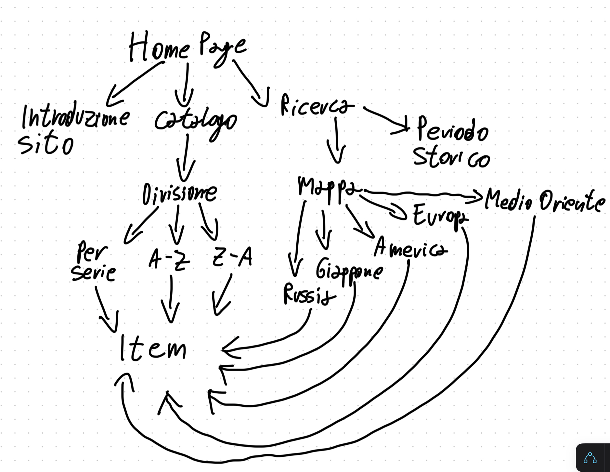

Le migliori opere videoludiche storiche riunite in un unico sito.
HistoriaVideoGames, è un portale di raccolta digitale di videogiochi a tema storico.
Il sito contiene, una raccolta di titoli e saghe videoludiche legati al tema storico. Sono esclusi dalla raccolta tutti quei titoli con ambientazione simil storica che non rappresentano nessun periodo veramente avvenuto. All’interno del sito sono presenti sia saghe videoludiche come: Assassin’s Creed.
Il sito avrà le caratteristiche di un database, raccogliere i vari videogiochi a tema storici e categorizzare in: epoca storica e luogo di ambientazione.
Il sito permetterà di commentare i videogiochi tramite un apposito spazio.
HTML, CSS, Bootstrap
Questa raccolta ha come scopo di far conoscere opere videoludiche a tema storico che non sono molto conosciute. Nel sito saranno presenti sia grandi saghe videoludiche, come Assassin Creed. Sono escluse tutte quelle opere che hanno un'ambientazione simile storica come, la saga di The Witcher o la saga di dark souls, con un ambientazione simile medievale, ma senza ambientazione storica.
Il sito sarà pubblico a tutti, con l’uso di un login e la possibilità di lasciare recensioni anonime e non.
Il sito avrà testo, immagini e contenuti multimediali che descrivono o rappresentano il videogioco.
Tutte le risorse sono disponibili pubblicamente in rete.
L’esistenza di questo sito, ha lo scopo di far conoscere ad un maggior numero di persone alcuni videogiochi a tema storico che sono poco conosciuti, perché appartenenti ad una nicchia. Non sono presenti altri siti online che parlano di videogiochi a tema storico, perciò ho pensato fosse una buona idea creare un archivio digitale per la raccolta di tali opere. Un sito dal nome simile esiste, però riguarda giochi come gli scacchi.

La scheda principale è quella dell'Homepage che collega tutto il resto del sito.
In ogni pagina è presente un headler, un interfaccia di navigazione (escluso i crediti e licenze), un prefooter per inserire crediti e licenze e footer.
Nelle pagine del catalogo sarà possibile trovare le immagini di copertina dei giochi con il link per portarli allo loro pagina per poterlo analizare.
Nelle pagine inerenti alla visualizazione dei giochi sarrano presenti delle breadcrumb, sotto il menù di vavigazione, ciò permette più facilitalmente il ritorno alla schermata precedente. Nei contenuti della pagina in se, sulla sinistra: la copertina e un trailer. Mentre a destra alcune informazioni generiche sul videogioco, come data di uscita, un breve sinossi della trama e la disponibilità dei giochi tramite console o PC. Nella parte in basso a destra è presente un spazio dove commentare il gioco.
Nelle schede delle pagine sarà possibile lasciare un commento per dare un opinione al gioco nel catalogo.
Nelle pagine dei giochi sarà possibile anche di votare i giochi con un vota da 1 a 10.
Sul sito saranno diversi tool di ricerca come: l’uso di una mappa, dove cliccando una determinata zona sarà possibile vedere tutti i giochi ambientati in tale zona. Un altro tool sarà la ricerca di un gioco tramite il periodo storico, con un sistema di schede. Oppure una ricerca tramite il Catalogo diviso per: serie videoludica o per ordine alfabetico.
Questo è un progetto amatoriale, non detengo i diritti di utilizzo dei contenuti multimediali, tutte le immagini e video utilizzate appartengono ai rispettivi proprietari.
Pagina Fandom (Cover dei giochi)
Wikimedia Commons
Store ufficiale Playstation (Cover dei giochi e disponibilità dei giochi)
Store ufficiale Xbox
Epic Game Launcher (Cover dei giochi e disponibilità dei giochi)
Steam (Disponibilità dei giochi)